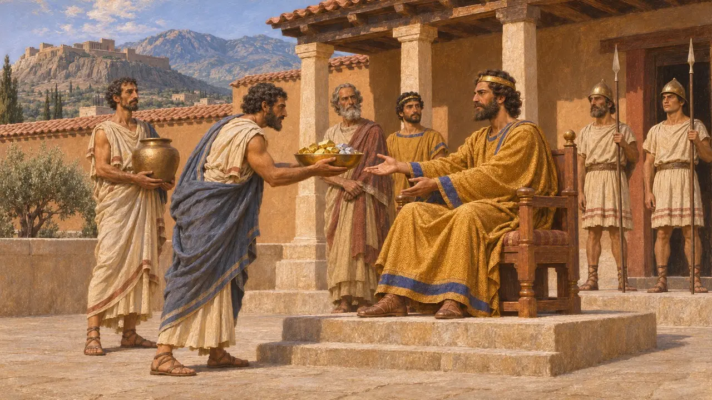
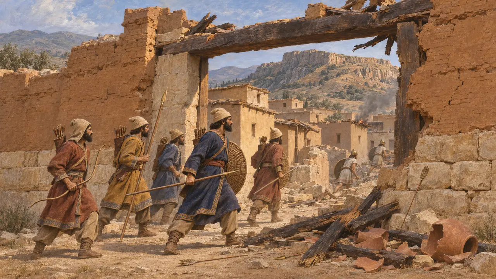
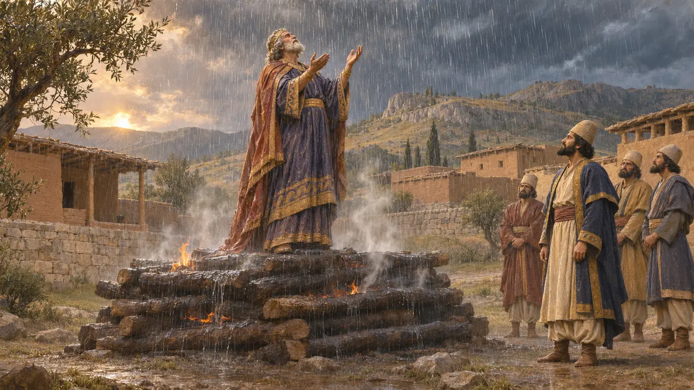
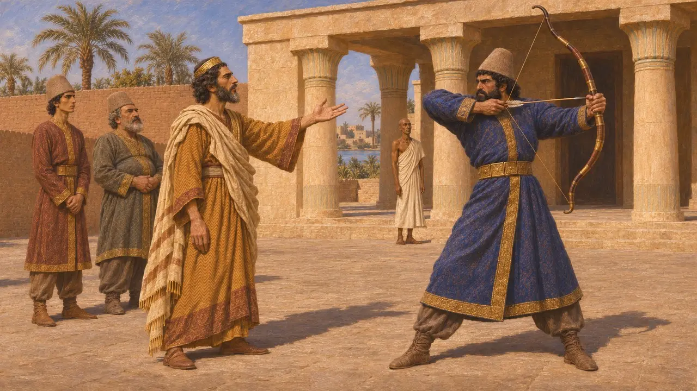

Kroisos
Lidya'nın son Mermnad kralı, yaklaşık MÖ 560-547 arasında Sardes'ten hüküm sürdü
Kroisos, Paktolos altınından gelen serveti Yunanlılar arasında dillere destan olmuş, Lidya'nın son kralıydı. Kyros onu yenip Sardes'i alana dek, muhtemelen 540'lara kadar, Batı Anadolu'daki Yunan kentlerini yönetti. Lidya'nın düşüşü Perslere Ege'de ilk dayanak noktasını kazandırdı ve İon Yunanlılarını Kral'ın egemenliğine soktu.
Oyunda: Oyunun kronik notu Kroisos'u Herodotos gibi, Kyros'un Kambyses'le birlikte yurda geri gönderdiği danışmanı olarak sunar. Bu hayatta kalış Herodotos'un anlatısıdır; hiçbir Pers ya da Babil metni onun adını anmaz.

Lidya Kralı ve İonia'nın efendisi
Antik anlatıHerodotos'a göre Alyattes'in oğlu Kroisos, Asya Yunanlılarını haraca bağlayan ilk yabancı hükümdardı; önce Efes'e, ardından diğer İon ve Aiol kentlerine saldırdı. Sparta ile, Mısırlı Amasis ile ve Babil ile ittifaklar kurdu. Kyros, Astyages'i devirdikten sonra Kroisos Halys'i geçti ve Pteria'da sonuçsuz bir savaş verdi. Kroisos yurduna dönünce Kyros peşinden geldi ve Sardes'i kuşatmanın on dördüncü gününde aldı.
Herodotus 1.6, 1.26-28, 1.69, 1.76-84
Efes'teki adı
BelgelerdeEfes'teki arkaik Artemis tapınağına ait mermer sütun kaidelerinin parçaları, Kral Kroisos'u adayan olarak anan kısa ve kısmen tamamlanmış bir yazıt taşır. Bu parçalar bugün British Museum'dadır. Tapınağın sütunlarının çoğunu Kroisos'un bağışladığını söyleyen Herodotos'u doğrularlar. Kroisos'un Delphoi'ye sunduğu zengin armağanlar ise daha çok Herodotos'tan bilinir; Herodotos bunların bir kısmının oradaki tapınak yandığında hasar gördüğünü aktarır.
Ephesus column-base inscriptions, British Museum; Herodotus 1.50-51, 1.92

Sardes ne zaman düştü ve ona ne oldu
TartışmalıGenel kabul gören MÖ 547 ya da 546 tarihi, Yunan kronolojisine ve Kyros'un Nabonidus'un dokuzuncu yılında bir krala karşı sefere çıktığını bildiren Nabonidus Kroniği'ne dayanır. O ülkenin adı tabletin kırık kısmındadır ve bugün pek çok bilim insanı bu adın Lidya olarak okunabileceğinden şüphe eder. Sardes'teki kazılar, altıncı yüzyılın ortalarına ait, çok sayıda ok ucunun bulunduğu şiddetli bir yıkım tabakası ortaya çıkarmıştır; bu da bir Pers kuşatmasıyla örtüşür. Tarihçiler, Kroisos'un kentin düşüşünden gerçekten sağ kurtulup kurtulmadığı konusunda da anlaşamaz.
Nabonidus Chronicle (ABC 7); Sardis excavation reports

Odun yığını, Solon ve Apollon
Geç dönem efsanesiHerodotos'a göre Kyros, Kroisos'u bir odun yığınının üzerine koydurmuştur. Kroisos, ona hiç kimsenin ölmeden önce mutlu sayılmaması gerektiği uyarısında bulunmuş olan Solon'un adını haykırmış, Apollon da ateşi söndürmek için yağmur göndermiştir. Kronoloji, Solon ile böyle bir buluşmayı pek olası kılmaz. MÖ 468'de yazan şair Bakkhylides'te ise Kroisos odun yığınına kendi isteğiyle çıkar ve Apollon onu Hyperborealıların ülkesine götürür.
Herodotus 1.29-33, 1.86-87; Bacchylides, Ode 3

Kyros ve Kambyses'in danışmanı
Antik anlatıHerodotos'ta Kroisos, Kyros'a isyankâr Lidyalıları köleleştirmek yerine silahtan ticarete ve müziğe yöneltmesini öğütler. Ayrıca Kyros'u Massagetlere karşı Araks'ı geçmeye teşvik eder; bu sefer Kyros'un ölümüyle sonuçlanır. Kyros onu Kambyses'in gözetiminde Persis'e geri gönderir. Herodotos daha sonra onu Mısır'da Kambyses'i azarlarken gösterir; Kambyses de onu okla vurmaya kalkışır. Ölümüne dair hiçbir kayıt yoktur.
Herodotus 1.155-156, 1.207-208, 3.14, 3.34-36
Kaynaklar
- Herodotus, Histories 1.6-94, 1.153-156, 1.207-208, 3.14, 3.34-36
- Nabonidus Chronicle (ABC 7)
- Bacchylides, Ode 3
- P. Briant, From Cyrus to Alexander, 2002
- A. Kuhrt, The Persian Empire: A Corpus of Sources from the Achaemenid Period, 2007
- Archaeological Exploration of Sardis, excavation reports